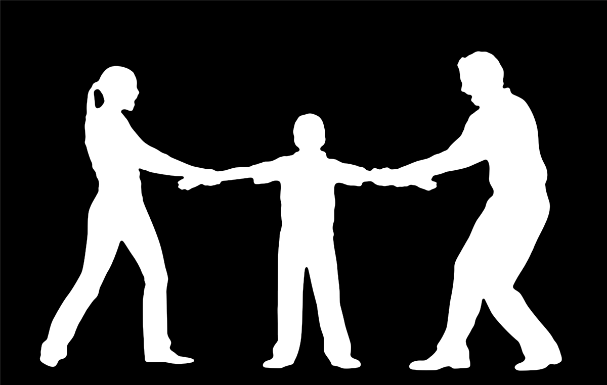

Problemas Familiares
Os adolescentes são muito influenciados pelas suas famílias ainda que, por vezes, estes laços possam ser abalados. Estudos feitos nas últimas décadas têm mostrado, de forma consistente, que existe menos conflito entre os adolescentes e suas famílias do que se pensava. Estes estudos referem que o conflito está presente em apenas 15 % a 25 % das famílias. A ocorrência destes conflitos está relacionada sobretudo com as rotinas familiares, o estabelecimento de horas de entrada em casa, namoros, notas escolares, aparência física e hábitos alimentares.
Os pais continuam, hoje, a influenciar os seus filhos adolescentes não só nas suas crenças mas também ao nível do seu comportamento. Contudo, mães e pais influenciam os adolescentes de maneira diferente. Parecem existir diferenças consideráveis entre o comportamento e o papel das mães e dos pais nas relações familiares com os filhos adolescentes. Assim, os pais tendem a encorajar o desenvolvimento intelectual e frequentemente envolvem-se em actividades de resolução de problemas e discussão dentro da família. Como consequência, quer rapazes quer raparigas discutem ideias com os pais. O envolvimento dos adolescentes com as mães é mais complexo. Mães e adolescentes interagem no que diz respeito por exemplo às responsabilidades nas tarefas domésticas, trabalhos escolares, disciplina dentro e fora de casa e actividades de lazer. Estas áreas podem resultar em maiores conflitos entre as mães e os seus filhos adolescentes contudo, tendem a criar maior proximidade entre mães/filhos de que entre pais/filhos.
Os jovens nesta fase de transmutação fisiológica e emocional despertam dentro deles preocupações e receios que se não houver um acompanhamento familiar e tiver complemento informativo e activo a nível do Ensino Escolar, provocará distúrbios de ordem psicológica e comportamental na personalidade do indivíduo tornando-se fortemente marcante no futuro!